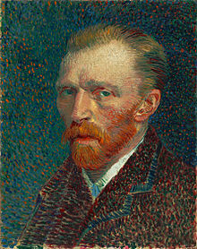
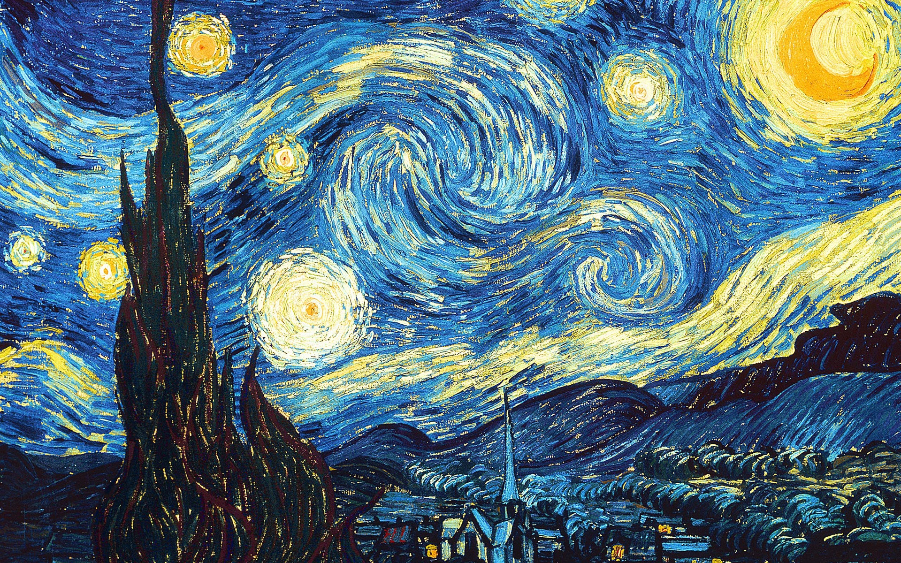
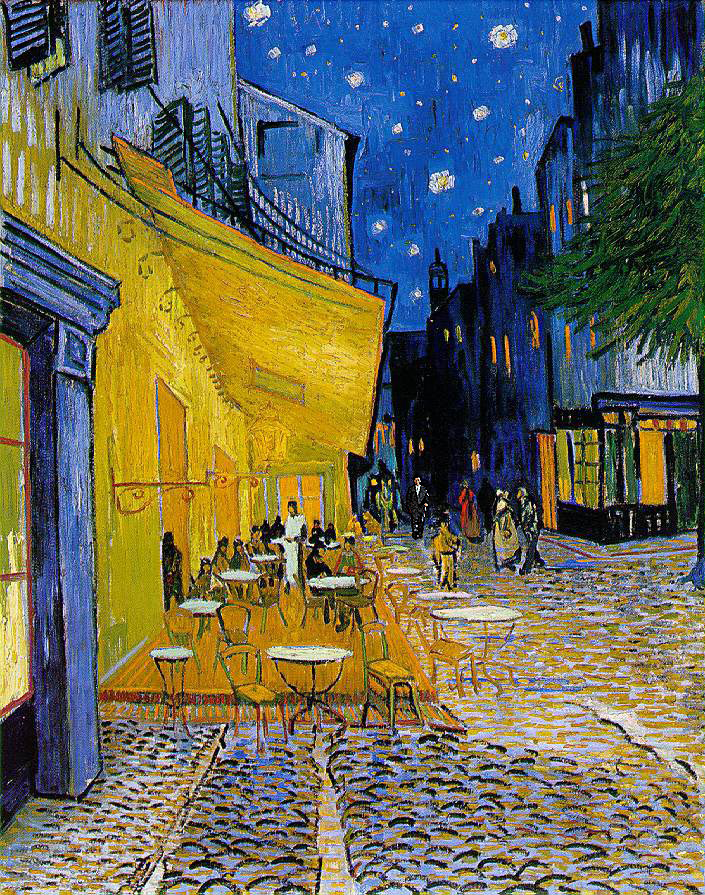

목록

빈센트 빌럼 반 고흐는 네덜란드 화가로 일반적으로 서양 미술사상 가장 위대한 화가 중 한 사람으로 여겨진다. 그는 그의 작품 전부를 정신질환을 앓고 자살을 감행하기 전의 단지 10년 동안에 만들어냈다. 그는 생존기간 동안 거의 성공을 거두지 못하고 사후에 비로소 알려졌는데, 특히 1901년 3월 17일 (그가 죽은 지 11년 후) 파리에서 71점의 반 고흐의 그림을 전시한 이후 그의 명성은 급속도로 커졌다.
청년시절 빈센트는 삼촌 빈센트의 권유로 헤이그에 있는 구필 화랑에서 일하기 시작했다. 그의 네 살 아래 동생이자 빈센트가 평생의 우애로 아꼈던 그의 동생 테오도 나중에 그 회사에 들어왔다. 이 우애는 그들이 서로 주고받았던 엄청난 편지 모음에 충분히 기록되어 있다. 이 편지들은 보존되어 오다가 1914년에 출판되었다. 그 편지들은 그 화가의 삶에 많은 통찰을 주었고, 그가 예민한 마음의 재능 있는 작가라는 것도 보여 주었으며, 무명화가로서의 고단한 삶에 대한 슬픔이 묘사되어 있다. 테오는 빈센트의 삶을 통틀어서 경제적으로 지원해 주었다.
1881년에 그는 과부인 사촌 케이 보스에게 그의 사랑을 고백했지만 그녀는 그를 거부했다. 나중에 그는 매춘부 신 호르닉과 그녀의 아이들과 함께 이사하고 그녀와 결혼할 것을 생각했지만, 그의 아버지는 이 관계에 엄격하게 반대했고 심지어 그의 동생 테오도 그것에 반대하는 조언을 했다. 무엇보다도 신 호르닉과 고흐는 성격차이가 있었고 결국 그들은 나중에 헤어졌다.
1888년 12월 23일에에 그는 아를의 사창가에 있는 매춘부에게 자신의 왼쪽 귀 조각을 건넸다. 고흐는 매춘부의 신고를 받고 그의 집에 도착한 경찰에 의해 병원으로 이송되었다. 그런 일이 있은 후 아를의 주민들은 그를 ‘미친 네덜란드 사내’라고 하며 그에게 마을을 떠나라고 강요했다. 그리고 그는 1889년 5월 8일, 생레미의 한 정신병원에 들어갔다
1890년 7월 27일,고흐는 들판으로 걸어나간 뒤 자신의 가슴에 총을 쏘았다. 그는 바로 죽지는 않았지만 그 총상은 치명적이었다. 그는 비틀거리며 집으로 돌아간 후, 심하게 앓고 난 이틀 뒤, 동생 테오가 바라보는 앞에서 37세의 나이로 숨을 거뒀다. 그리고 몇 개월 지나지 않아 동생 테오도 매독을 앓다가 죽었다. 두 형제의 시신은 나란히 묻혔다.

